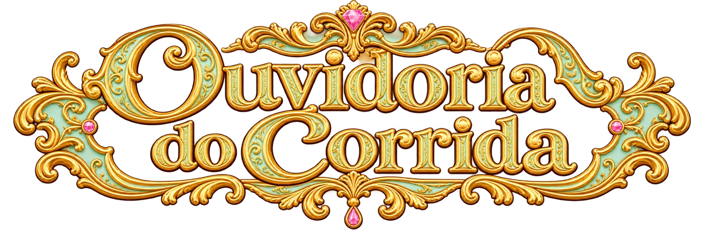

O que a torcida do Corrida das Blogueiras 8 diz quando ninguém está perguntando.
Enquetes medem o que o público responde quando é perguntado. A Ouvidoria escuta o que a torcida escreve por conta própria no YouTube e mostra, a cada episódio, quem ela elogia, quem critica e se ela adivinha quem sai no flop.
A altura do retrato acompanha o número de menções. O contorno verde indica saldo positivo, e o rosa, negativo. CliqueToque num retrato para abrir a ficha.
É a porcentagem de elogios menos a porcentagem de críticas entre os comentários sobre cada pessoa.
Resumo escrito pelo Gemini a partir de todas as menções, separadas por tema, do que aconteceu no episódio e das cenas mais comentadas, e revisado antes de ir ao ar.
Em ordem de menções. A barra mostra, entre os comentários sobre cada pessoa, a parte de críticas e a de elogios. O resto são comentários neutros.
Como o saldo da torcida de cada participante mudou de um episódio para o seguinte.
A torcida costuma escrever a minutagem da cena que está comentando. Cada barra é um minuto do episódio, e a altura mostra quantas vezes ele foi citado.
Cada ponto é alguém do elenco, posicionado pelo saldo da torcida, de −100 a +100. Quanto mais à direita, mais a torcida estava a favor.
Quem sai no flop só é revelado no começo do episódio seguinte, e a janela de 48 horas fecha antes disso. Então a torcida comenta sem saber o resultado, e dá para testar se ela adivinha. A comparação é feita só entre quem estava no flop, porque só eles podiam sair.